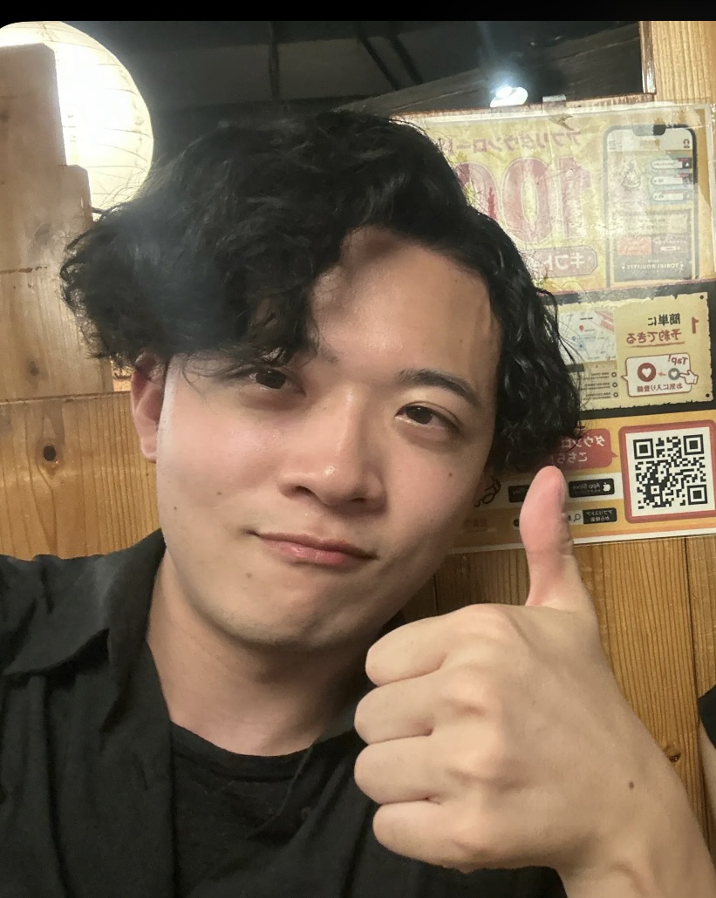

村井 史門 Shimon Murai / tokkiwa
GitHub
Google Scholar
Qiita
早稲田大学 甲藤研究室
で、深層学習と画像処理について研究を行っています。特に深層学習を用いた画像圧縮 (Learned Image Compression: LIC) の研究を専門にしています。
論文 / Publications
国際学会・第一著者 / International Conferences - First Author
Shimon Murai
, Fangzheng Lin, Jiro Katto. FlashGMM: Fast Gaussian Mixture Entropy Model for Learned Image Compression - IEEE VCIP 2025
[arXiv]
[GitHub]
Shimon Murai
, Sun Heming, Jiro Katto. LMM-driven Semantic Image-Text Coding for Ultra Low-Bitrate Learned Image Compression - IEEE VCIP 2024
[arXiv]
[GitHub]
国内学会・第一著者 / Japanese Domestic Conferences - First Author
村井史門
, 甲藤二郎. ウェーブフロント並列化を用いた学習型画像圧縮 - 画像工学研究会(IE) 2026. (発表予定)
村井史門
, 甲藤二郎. 混合ガウスモデルと平均シフト量子化を用いた学習型画像圧縮 - 電子情報通信学会大会 2026. (発表予定)
村井史門
, 林方正, 甲藤二郎. 学習型画像圧縮のための高速な混合ガウスエントロピーモデル - 画像符号化シンポジウム(IMPS/PCSJ) 2025.
[学会HP]
村井史門
, 孫鶴鳴, 甲藤二郎. 状態空間モデルを用いた深層学習画像圧縮 - 画像工学研究会(IE) 2025
[学会HP]
村井史門
, 林方正, 孫鶴鳴, 甲藤二郎. 深層学習画像圧縮のコンテキストモデルにおける潜在表現分割の検討 - 画像符号化シンポジウム(IMPS/PCSJ) 2023.
[J-GLOBAL]
国内学会・共著 / Japanese Domestic Conferences - Co-author
柳川健太,
村井史門
, 甲藤二郎. 線形アテンションを用いた意味的学習型画像圧縮 - 画像工学研究会(IE) 2026. (発表予定)
内芝謙允,
村井史門
, 甲藤二郎. 混合ガウスモデルと線形アテンションを用いた学習型画像圧縮 - 画像工学研究会(IE) 2026. (発表予定)
受賞 / Award
画像符号化シンポジウム (IMPS/PCSJ) ベストポスター賞 - 2025年
早稲田大学 情報理工学科 学科賞 - 2025年
学歴 / Education
2025年-在学中 早稲田大学大学院 基幹理工学部 情報通信・情報理工研究科(英語学位プログラム) 修士課程
2021年-2025年 早稲田大学 基幹理工学部 情報理工学科 (英語学位プログラム) 学士課程
業歴 / Carrer
ギリア株式会社 - 長期インターンシップ (2024年7月~2025年8月)
深層学習の研究開発、特に画像処理モデルの開発に従事していました。
NTT研究所 - インターンシップ (2024年8月~2025年9月)
アクセスサービスシステム研究所にて、光通信のソフトウェア化・並列化の研究に参加させていただきました。
富士通株式会社 - インターンシップ (2024年10月~2025年11月)
言語モデルのカーネル最適化に関する研究開発に参加しました。
株式会社エクサウィザーズ - 長期インターンシップ (2025年9月~現在)
機械学習とクラウドインフラについての研究開発を行っています。Zennにて
自分の技術ブログ
が公開されています。
技術 / Skills
プログラミング言語 / Programming Languages
研究での使用・開発経験・実務経験あり - Python, C, C++
研究での使用・開発経験あり - CUDA, Matlab
使用経験あり - C#, R, Java, TypeScript + React, HTML, VBA, GASなど
フレームワーク / Frameworks
研究での使用・開発経験・実務経験あり - PyTorch, vLLM, transformers, OpenCV
使用経験あり - Keras, Tensorflow, scikit-learnなど
開発環境など / Development Environment
研究での使用・開発経験・実務経験あり - AWS, Git, Linux, Docker
言語 / Languages
日本語 - ネイティブ
英語 - TOEIC L&R 960, TOEFL iBT 93
競技プログラミング / Competitive Programming
Atcoder:
tokiwa
- 緑ランク (レート800+)
Kaggle:
tokkiwa
- Competition Expert
その他 / Others
査読歴: IEEE JETCAS, IEEE TCSVT.
[Web of Science]